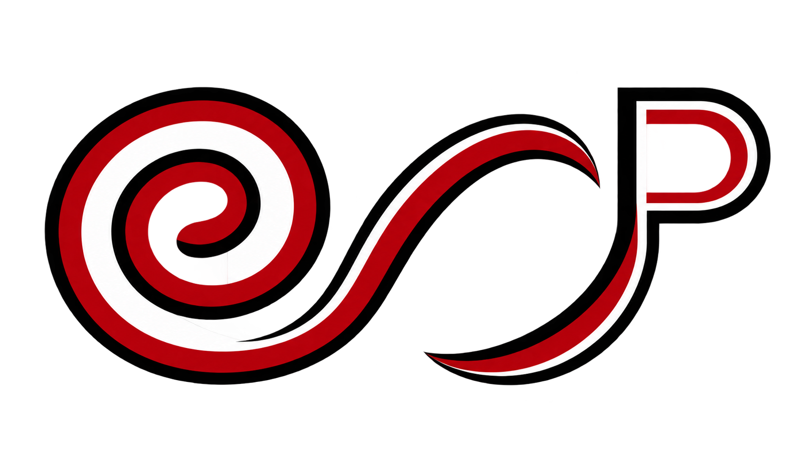
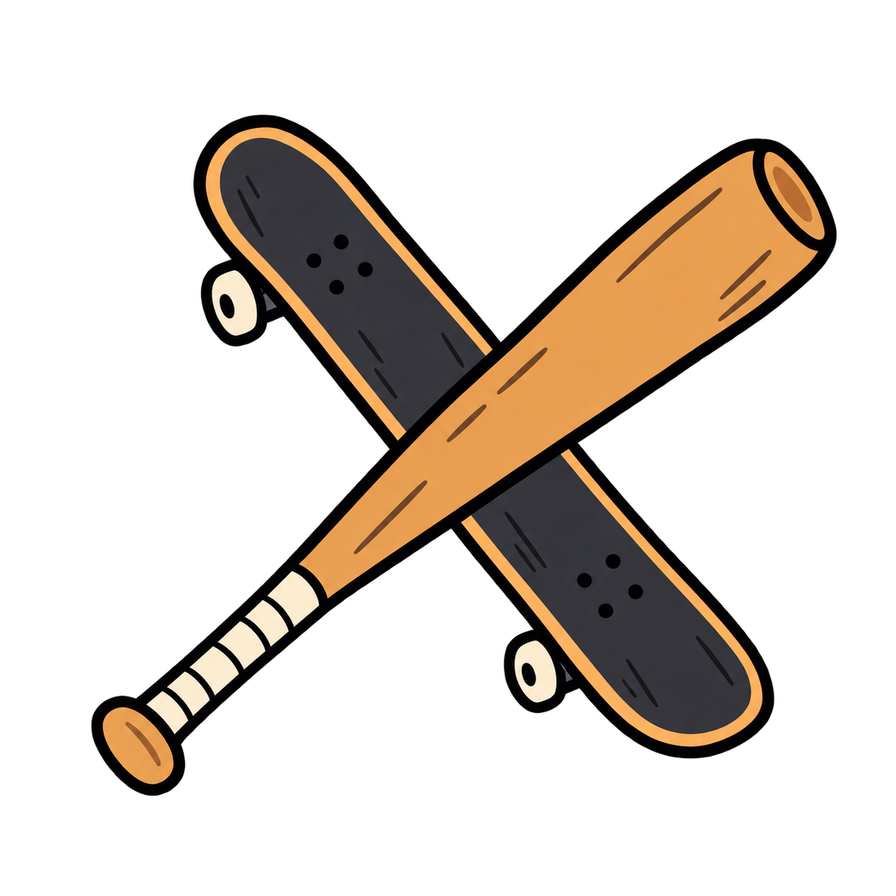
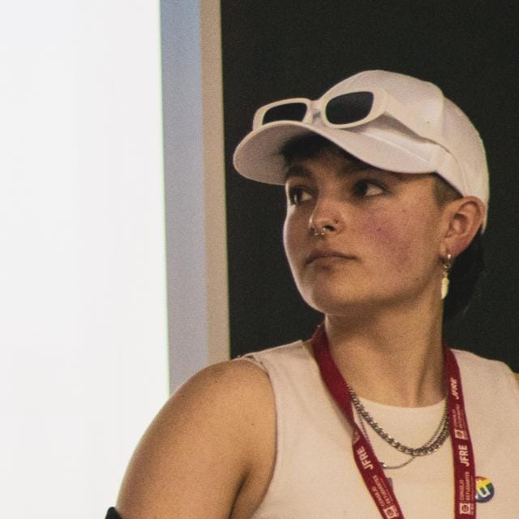
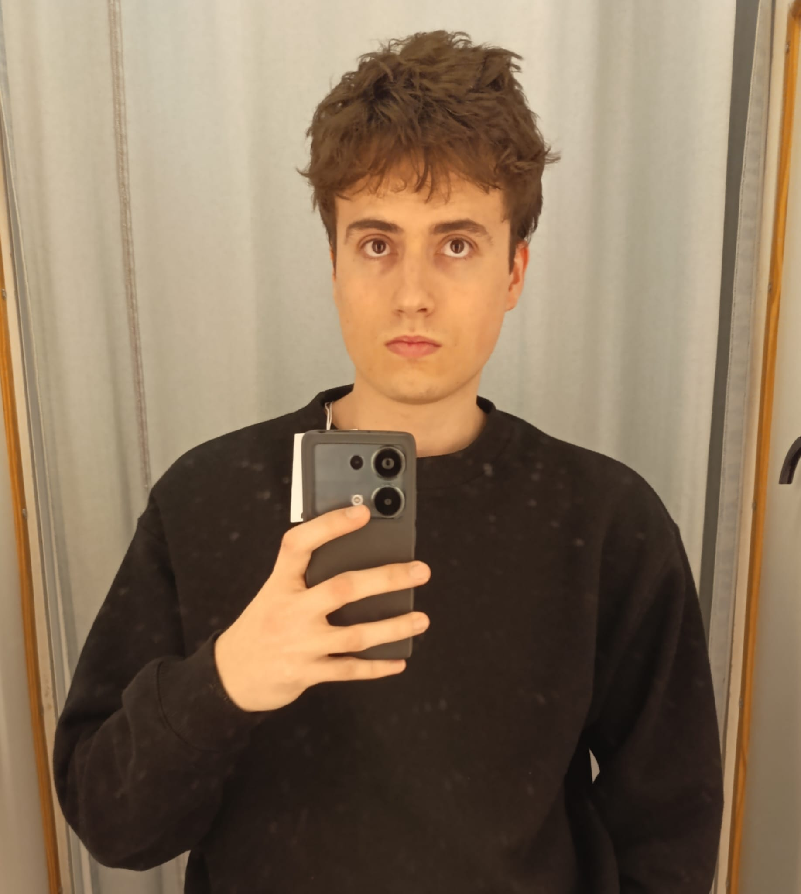
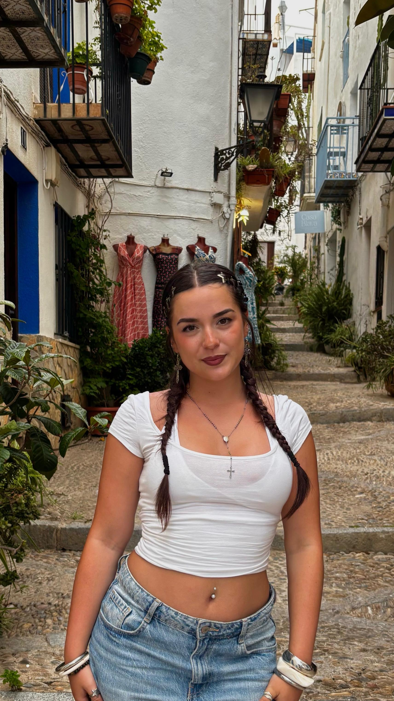
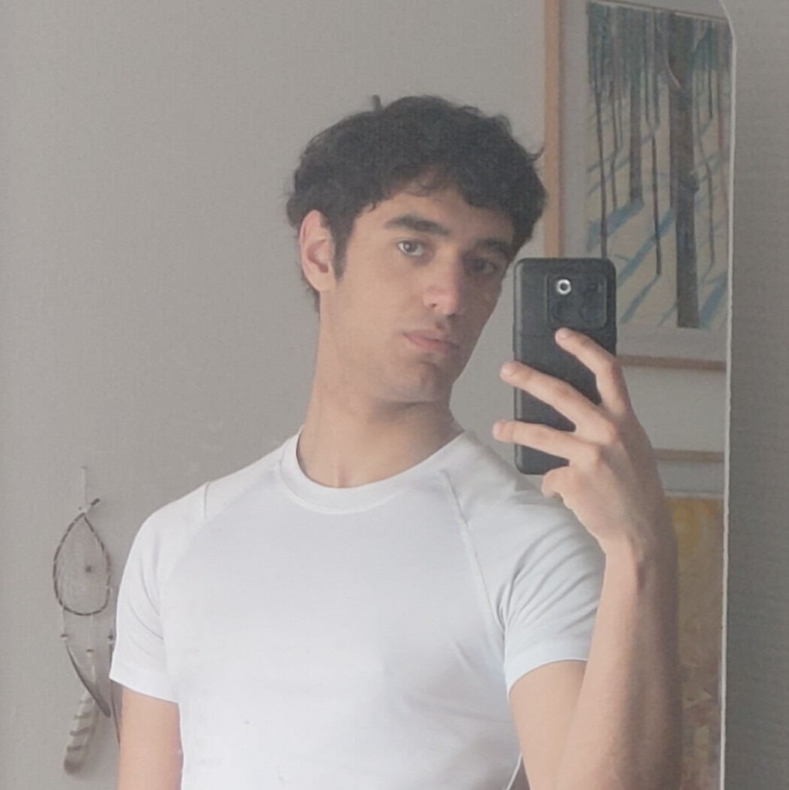
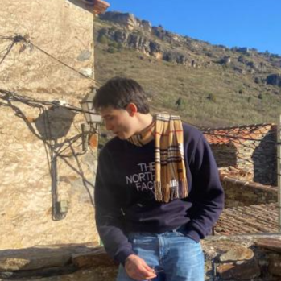
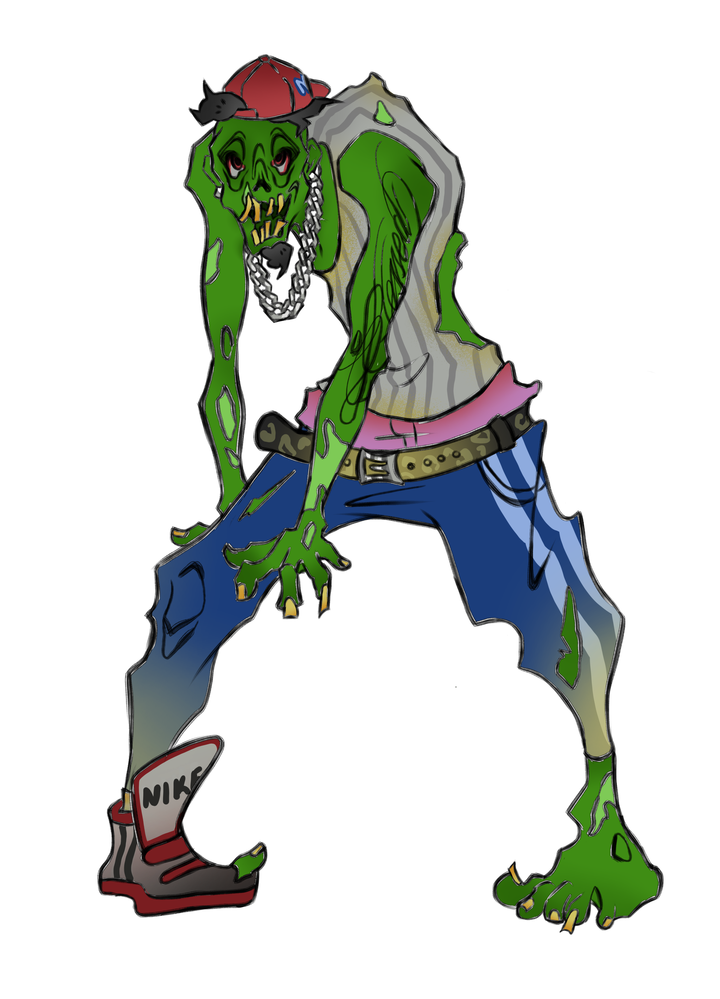
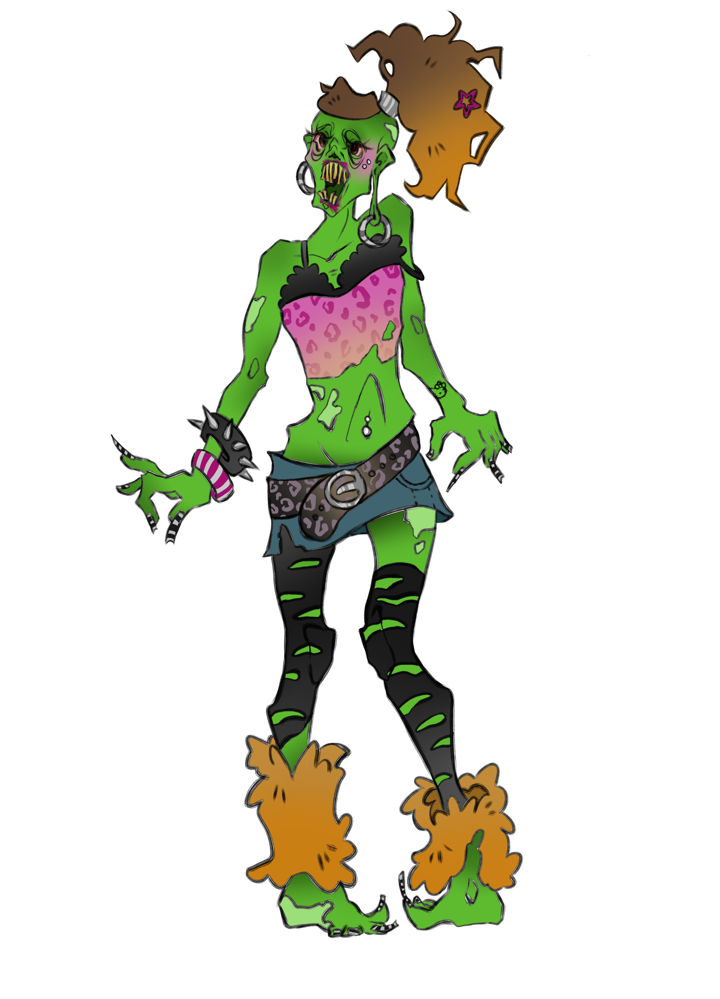
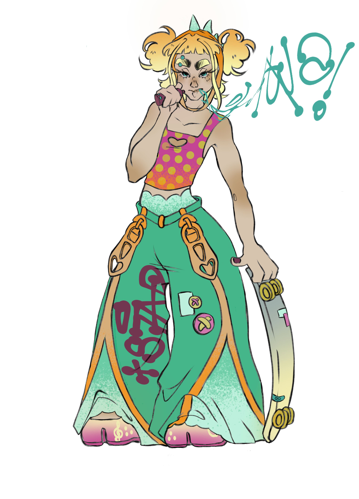

Misión
Crear videojuegos con identidad propia, que mezclen acción, humor y cultura urbana, y que cualquier jugador pueda disfrutar desde el primer minuto.

presenta
Recorre el Madrid zombi sobre un skate y salva la ciudad.
Somos ECP, un equipo de cinco personas dedicado al diseño y desarrollo de videojuegos.
Jugar la demo Descubrir el juego
Crear videojuegos con identidad propia, que mezclen acción, humor y cultura urbana, y que cualquier jugador pueda disfrutar desde el primer minuto.
Convertirnos en un estudio independiente reconocido por sus mundos con personalidad, y llevar nuestros juegos a plataformas como Steam e Itch.io.
ECP nace en la URJC como un equipo de cinco estudiantes de diseño y desarrollo de videojuegos. La idea de THE LAST CURE surgió de una pregunta: ¿y si Madrid se llenara de zombis y la única salvación fuera cruzar la ciudad en skate?

Programadora web y perfil creativo de narrativa, edición de vídeo y maquetación de memorias y GDDs.
RR.SS

Diseño de personajes, concept art, caracterización, modelado 3D y texturizado de personajes para animación.
RR.SS
Programador en C#, editor de multimedia, desarrollador de UI y UX y creativo en narrativa y guionización del proyecto.
RR.SS
THE LAST CURE es un juego 3D de acción ambientado en un Madrid postapocalíptico. Aroa recorre sus calles sobre un skate, se enfrenta a hordas de zombis y debe llegar a la torre del Palacio Real para activar la cura que creó su padre.
Género: Acción 3D
Plataforma: PC / Itch.io
Motor: Unity
Jugadores: 1 jugador
Estado: En desarrollo
Aroa se mueve con su skate y se defiende con el bate, usando también el entorno para no ser rodeada.
Un recorrido por lugares reconocibles de Madrid, con campamentos de supervivientes donde descansar, mejorar el skate y descubrir la historia.
Hordas de zombis, obstáculos y enemigos como Saray y Jhontan. La vida se recupera con comida típica madrileña, como los bocadillos de calamares.



Definimos el concepto, la historia de Aroa y el tono del juego. Primer prototipo con movimiento básico sobre el skate y primeros bocetos de personajes.
Implementamos el combate con el bate, la vida del personaje y los primeros zombis con comportamiento sencillo.
Modelado y texturizado de Aroa, Saray y Jhontan, shader de cel shading y montaje del primer tramo del escenario inspirado en Madrid.
Ajuste de controles, corrección de errores, música y efectos de sonido, y preparación de la demo jugable para Itch.io.
Jugadores de 16 a 30 años aficionados a la acción, el humor y la estética urbana, que juegan en PC y siguen contenido de videojuegos indie en YouTube, Instagram y X.
Demo gratuita en Itch.io, tráiler y vídeos de proceso en YouTube, publicaciones en redes sociales con el arte de los personajes y presentación en eventos y festivales de videojuegos indie.
| Juego | Similitud | Qué nos diferencia |
|---|---|---|
| Jet Set Radio | Cel shading, skate y estética urbana muy marcada. | Mundo postapocalíptico con zombis y un Madrid reconocible. |
| Dead Rising | Zombis en masa, humor y armas improvisadas. | Movimiento rápido sobre skate y una protagonista con misión personal. |
| Dying Light | Recorrer una ciudad infestada y descansar en refugios. | Tono más desenfadado y estilo visual ilustrado, no realista. |
Unity y C#: controlador del skate, combate con el bate, vida del personaje y comportamiento de los zombis. Código versionado en GitHub y escrito en Visual Studio Code.
Cel shading con contornos negros y texturas pintadas a mano. Personajes diseñados en ibisPaint X y modelados en Blender con geometría low poly.
Música urbana de ritmo rápido y efectos como el rodar del skate, los golpes de bate y los gruñidos de los zombis, integrados en Unity según lo que ocurre en pantalla.